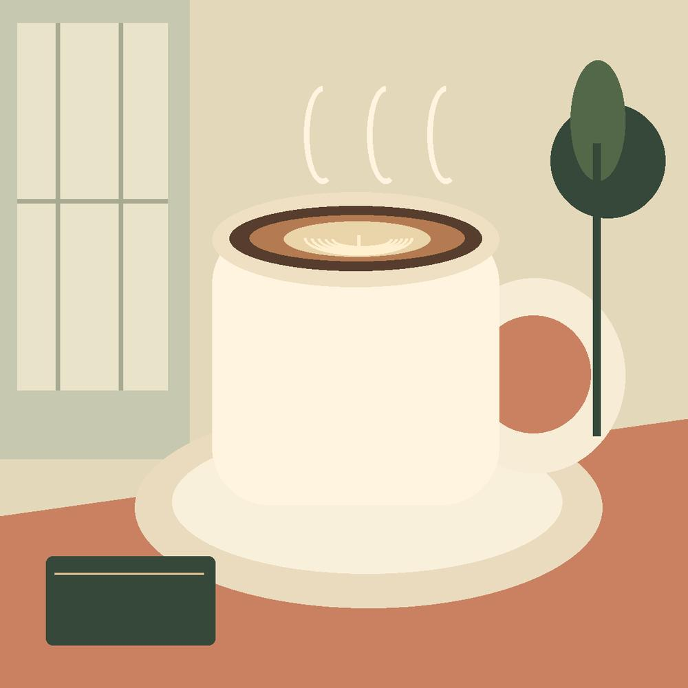

Iced Latte
RM 10Espresso, milk and ice. A cool, smooth start to your next chapter.
GOOD COFFEE. UNHURRIED MOMENTS.
Between classes, big ideas and busy days, take a pause. Find your favourite cup and make yourself at home.
Find your next favourite
MORE THAN A COFFEE BREAK
A chat after class. A fresh page. Five quiet minutes, just for you.
Pause Coffee is a café concept created for university students and young creatives. The idea is simple: bring good drinks, easy bites and a relaxed place to meet into one welcoming space.
Whether you come with a notebook or a friend, there is always a reason to take a little pause.
18 SECONDS, JUST FOR YOU
Choose a cup. Step away.
Enjoy the moment.
1. Choose: Start with your favourite cup. Coffee, matcha or something cold.
2. Take a break: Set your work aside for a moment. A small pause can feel good.
3. Enjoy: Sip slowly. Catch up. Start again. Make room for a little pause.
LET'S START A CONVERSATION
A menu idea, a question or just a hello.
We would love to hear it.
Pause Coffee is a fictional café created by Wang Jingfei for ICT2215. This page does not represent an operating business.